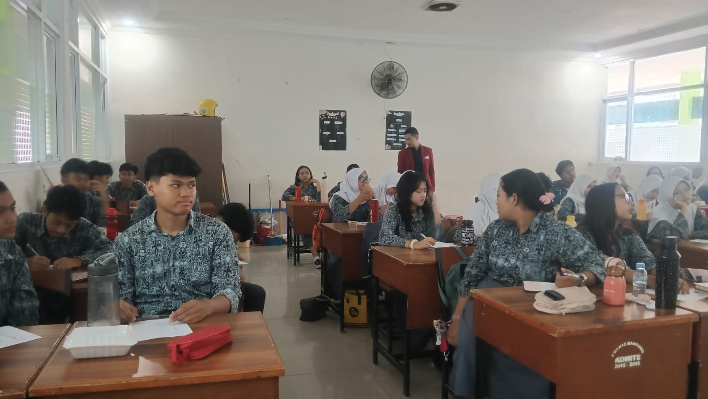
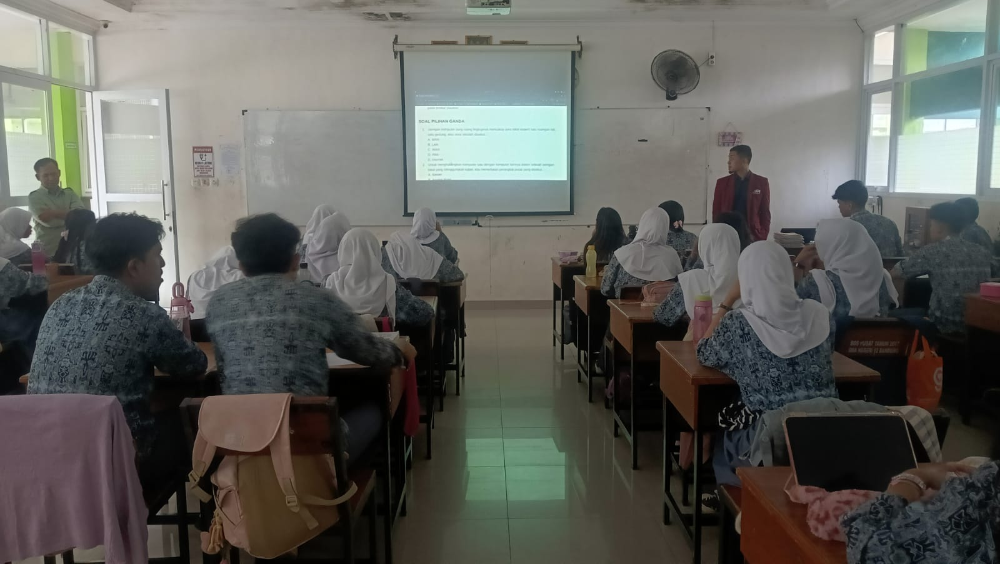
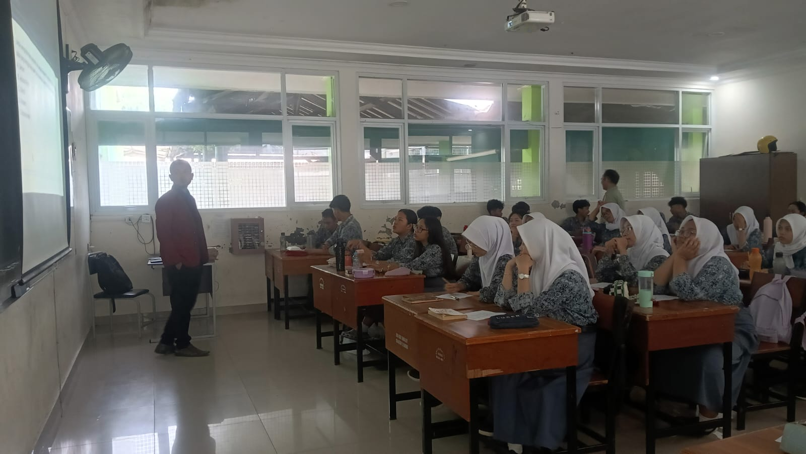

Analisis Pembelajaran: Siklus 1
Konteks & Tujuan
Pada siklus pertama di SMAN 12 Bandung, saya menerapkan materi "Pemanfaatan Data untuk Pengambilan Keputusan" dengan model Problem Based Learning. Fokus utama saya adalah mentransformasi murid menjadi "penyidik data" yang mampu melakukan penalaran komputasional, bukan sekadar pengguna teknologi yang pasif.
Dokumentasi Kegiatan



Evaluasi Pembelajaran
| Aspek Evaluasi | Analisis |
|---|---|
| Kelebihan | Studi kasus berbasis data nyata sangat efektif memancing rasa ingin tahu murid dan keterlibatan aktif di kelas. |
| Tantangan | Manajemen waktu saat diskusi presentasi dan adanya murid yang masih pasif memerlukan perhatian khusus. |
Rencana Perbaikan
Berdasarkan umpan balik dari Guru Pamong, Bapak Ardi Ajang Kusnadi, S.T., saya akan melakukan:
- Optimasi alokasi waktu setiap tahap pembelajaran.
- Pemberian pertanyaan pemantik (scaffolding) bagi murid yang pasif.
- Penyederhanaan instruksi LKPD agar lebih mudah dipahami oleh kelompok fondasi.